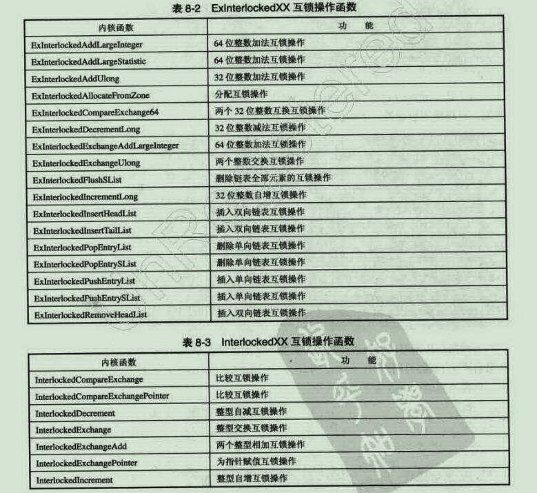

分页内存故障
分页内存由于有可能将磁盘文件映射过来，但是当读取不是在物理内存的时候会产生一个异常，这个异常会执行异常处理函数，原本是正常的，但是如果出现DISPATCH_LEVEL级别的异常线程中的时候会导致系统的崩溃。
对于等于或者高于DISPATCH_LEVEL级别的程序不能使用分页内存。
IRQL的升降
可以使用KeRaiseIrql和KeLowerIrql进行调节程序异常的级别。
自旋锁
就是常规的资源站用锁，这种锁如果被占有，那么其他线程要用到的话呢会一直询问，所以时间不宜太长，并且不能在高于DISPATCH_LEVEL的线程上使用。
这个锁不适合用在全局变量，而适合放在设备扩展中，名称为KSPIN_LOCK。
如果线程优先级是DISPATCH_LEVEL的话呢我们可以直接使用KeAcquireSpinlockAtDpcLevel，而如果不是这个优先级的话呢要使用KeAcquireSpinlock这个函数，因为它可以自动帮你调整优先级，并在释放的时候调整回来。
内核模式下的同步对象
用户操作的事件对象其实只是一个句柄，而在内核模式下操作的就是真正的指针
线程归属
PsCreateSystemThread函数当我们使用用户线程创建线程的时候，创建的线程归属用户进程，而我们穿进去的是NULL（系统），那归属就是system。
1 | VOID CreateThread_test() |
第一个创建的就是系统进程，第二个就是调用这个IRP的进程。
内核等待时间
1 | VOID MyProcessThread(IN PVOID pContext) |
使用起来和用户模式下没啥太大的区别，就多了几个参数，KeWaitForSingleObject第二第三个一般就是这两个参数，这里需要注意的是，如果我们没有等待，那么kEvent被回收的话呢，线程将崩溃。
内核与应用程序的Event线程等待
使用DeviceIOControl交互我们的Event实现用户线程和内核线程的同步（写这段代码的时候稍微不注意就会蓝屏，幸好没问题）
IOControl驱动代码
1 | NTSTATUS HelloDDKDeviceControl(IN PDEVICE_OBJECT pDevObj, IN PIRP pirp) |
需要注意的是我们在通过ObReferenceObjectByHandle函数获得到句柄的真实对象的时候，内核计数将会加一，所以我们要在最后减一，ObDereferenceObject函数就可以实现，驱动端实现的就是释放这个时间，让等待的线程跑起来。
ObReferenceObjectByHandle参数有点多：
- 事件句柄
- EVENT_MODIFY_STATE允许使用SetEvent,,ResetEvent和PulseEvent函数（网上找到的相关说明）
- ObjectType：
*ExEventObjectType, *ExSemaphoreObjectType, *IoFileObjectType, *PsProcessType, *PsThreadType, *SeTokenObjectType, *TmEnlistmentObjectType, *TmResourceManagerObjectType, *TmTransactionManagerObjectType, or *TmTransactionObjectType.
- KernelMode内核模式下运行
- (PVOID*)&pEvent这个东西我总觉得有问题，但是这样没错，这其实是个指针的指针
- 最后一个必须为NULL
用户层代码：
1 |
现将我们的宏设置上去
写一个简单的线程：
1 | UINT __stdcall testThread(LPVOID par) |
等待驱动给我们响应。
1 | DWORD dwOutput; |
创建事件对象，创建线程，发送控制信号，注意的是我们一定要等待线程运行完毕，否则我们在下面关掉了hEvent可能会出现问题！
程序逻辑：
- 用户层创建一个事件对象
- 用户层创建一个线程
- 用户层线程等待时间对象被激活
- 驱动激活事件对象
- 线程完毕
- 用户层等待线程完毕退出主线程
内核与内核的交互Event事件的时候我们是用的是名称搜索方法。
这里需要注意的是内核线程必须要自己进行强制结束，系统不给回收。
自旋锁
和互斥体很像，但是等待的时候是通过CPU一直访问，所以消耗的比较多，并且还会改变IRQL的级别，所以需要注意操作的内存。
并且：
DDK提供了两类互锁操作来提供简单的同步处理，一类是 InterlockedXX 函数，另类是ExInterlockedXX 函数。其中，InterlockedXX系列的函数不通过自旋锁实现，而ExInterlockedXX 系列函数通过自旋锁实现。InterlockedXX 系列函数不需要程序员提供自旋锁，内部不会提升IRQL，因此InterlockedXX函数可以操作非分页的数据，也可以操作分页的数据。而ExInterlockedXX需要程序员提供一个自旋锁，内部依靠这个自旋锁实现
同步，所有ExInterlockedXX不能操作分页内存的数据。
下面是相关的函数：

驱动实现文件异步读取
写这个例程的时候，电脑蓝屏不下十次！！！
原因是书上写的少了一些内容和我抄错了一点，但是经过多次的测试终于找到了问题！
首先用户层要实现异步读取就要使用FILE_FLAG_OVERLAPPED标记，用户层代码：
1 | HANDLE hDevcie = CreateFile("\\\\.\\HelloDDK",GENERIC_READ|GENERIC_WRITE,0,NULL,OPEN_EXISTING,FILE_ATTRIBUTE_NORMAL | FILE_FLAG_OVERLAPPED,NULL); |
打开文件的话呢注意的是打开的标记要或上FILE_FLAG_OVERLAPPED标记：
1 | OVERLAPPED overlap1 = {0}; |
我们县创建两个OVERLAPPED对象，其实这个对象里面应该填写我们的Event对象，但是我们这里不麻烦了，只是用异步的方式读取文件。
用户层写完之后我们就要写内核层：
首先我们要在IRP的CREATE函数中附加上这个：
1 | PDEVICE_EXTENSION pDevExt = (PDEVICE_EXTENSION)pDevObj->DeviceExtension; |
但是在学习的过程中，并没有这块内容。
作用就是初始化我们的链表对象，这个链表对象是记录我们还在pending（挂起）的IRP。
然后我们在READ函数中编写：
1 | NTSTATUS HelloDDKDeviceRead(IN PDEVICE_OBJECT pDevObj, IN PIRP pirp) |
先是我们获取到设备扩展对象，然后申请一个自己的MYIRP结构体：
1 | typedef struct _MY_IRP_ENTRY |
然后加入我们的链表当中。
这样子用户层使用ReadFile将会返回ERROR_IO_PENDING。
在用户层使用CloseHandle的时候会调用CLEANUP例程，我们编写这个例程：
1 | NTSTATUS HelloDDKDeviceCleanUp(IN PDEVICE_OBJECT pDevObj, IN PIRP pirp) |
首先也是获得设备扩展对象，然后对链表进行一次遍历，将遍历得到的PMY_IRP_ENTRY结构体中的IRP进行操作完毕，然后响应这个ReadFile，再释放这块内存。
最后我们返回CLEANUP的这个STATUS。
这里需要注意的是IoMarkIrpPending函数可以设置IRP为挂起状态。
真是累，弄了一晚上才解决很多问题！！！
StartIO串行
由于IRP支持异步的处理，所以我们最好也将IRP进行一个串行处理，这样子有助于我们驱动的稳定性，这里简单的记录一下，因为下面会有多串。
首先我们要先提供一个startIO的例程给设备。pDriverObject->DriverStartIo=HelloDDKStartIO;
我们要编写HelloDDKStartIO函数，这个函数的话呢我们需要注意的是，他与普通的IRP唯一的区别就是没有返回值。
这个StartIO例程运行在DISPATCH_LEVEL级别，因此这个例程是不会被线程所打断的。在声明时要加上#pragma LOCKEDCODE修饰符。
派遣函数如果想把IRP串行化，只需要加入IoStartPacket函数首先判断当前设备是“忙”还是“空闲”。如果设备“空闲”，则提升当前IRQL到DISPATCH_LEVEL级别，并进入StartIO例程“串行处理该”IRP请求。如果设备“忙”，则将IRP插入队列后返回。
其实就是说我们的在写Read之类的IRP的时候我们可以直接使用pending，然后调用这个IoStartPacket函数，然后当轮到我们的IRP执行的时候就会调用我们自己写的StartIO例程了。
在StartIO例程中我们需要调用IoStartNextPacket函数执行下一个StartIO例程。
其实这个Next函数比没有Next的函数却别就是他会操作一下IRP队列（删除我们之前执行的IRP）。
在这里还需要注意的我们在调用IoStartPacket的时候我们还需要提供一个取消函数（CancelIO时候调用的）。
这个函数用来处理我们的IRP的，这里需要判断的是，如果这个IRP是我们当前执行的话呢我们需要执行IONextPacket函数（因为要跳过当前执行），并且降低IRQL。不是当前执行的函数的话呢我们需要溢出队列。
这里还需要注意的是我们需要释放IRP->CancelIrpl这个自旋锁，因为他在CancelIO函数有一个申请的自旋锁。
还有一个需要注意的是我们在编写StartIO例程的时候我们判断如果当前是空闲的话呢就直接处理，而不是空闲的话呢我们就直接返回（因为后面他会进来的）。
自定义StartIO
需要自己设置出队入队，并且在进入队列前，将当前的IRQL提升到 DISPATCH_LEVEL。然后在自己的StartIO例程中需要注意的是我们要自己处理队列中的IRP。
其实说白了自定义的StartIO其实就是处理队列的IRP，在Read这种的IRP中不作处理而是交由StartIO进行处理。
还有一点需要注意的是，我们插入队列的时候，如果KeInsertDeviceQueue函数返回的是假，说明队列之前没东西，我们要在调用一下自己的StartIO。
中断服务例程
如果不希望自己线程被切换到其他的线程的时候，我们需要将PASSIVE_LEVE;提升到DISPATCH_LEVEL级别。
DDK中将硬件中断命名为DIRQL。
如果想在DDK中使用中断服务例程ISR我们需要鲜活的中断对象，是一个名为INTERRUPT的数据结构。
DDK提供IOConnectInterrupt函数将中断对象和ISR联系。
如果想让代码不被ISR打断的话呢我们需要将IRQL提升到DIRQL级别，我们需要用到KeSynchronizeExecution函数：
- 第一个参数是中断对象指针，与ISR关联。
- 第二个参数是我们要提供的不被打断的函数。
- 第三个参数是这个不被打断的函数的参数。
DPC延迟过程调用例程
简单的说就是除了ISR代码优先级最高的了，所以我们讲一些不太重要的处理异常的代码放在这里。
- 使用DPC例程的时候我们要先初始化DPC对象，要使用内核函数KeInitializeDpc
- 第一个参数是DPC的指针
- 第二个是DPC例程函数
- 第三个是DPC例程函数的参数
- 一般在DriverEntry中初始化DPC